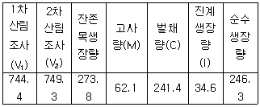
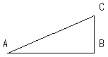
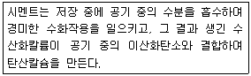

산림기사 (2009-05-10 기출문제)
1과목: 조림학
1. 택벌작업의 장점으로 틀린 것은?
- 임지가 보호된다.
- 심미적 가치가 높다.
- 양수수종의 갱신에 적합하다.
- 병해충에 대한 저항력이 높다.
(정답률: 80%)

2. 참나무속의 표현으로 맞는 것은?
- Acer
- Alnus
- Quercus
- Ulmus
(정답률: 76%)
3. 규칙적인 식재에서 ha당 묘목의 본수는 묘목 1본당 면적과 식재면적을 통하여 산출한다. 묘간 거리가 가로 1m, 세로 2m의 장방형 식재시 1ha에 식재되는 묘목 본수는?
- 5000본
- 3333본
- 3000본
- 2500본
(정답률: 79%)
4. 우리나라 온대 전체를 통한 대표적인 특징 수종은?
- 잣나무
- 졸참나무
- 너도밤나무
- 느티나무
(정답률: 36%)
5. 천연림 무육에서 잡목 솎아베기(제벌)의 벌채 대상목이 아닌 것은?
- 적정 밀도 유지에 있어 경합된 나무
- 줄기가 구부러지거나 여러 줄기로 갈라진 나무
- 보호목 또는 비료목의 효과가 있는 나무
- 형질이 불량하거나 피압된 나무
(정답률: 71%)
6. 잣나무 임지에서는 초본식물의 침입과 종자발아가 어렵기 때문에 2차 천이가 잘 진행되지 못한다. 이러한 현상을 무엇이라고 하는가?
- 극성(polarity)
- 타감작용(allelopathy)
- 피트백(feedback)작용
- 역작용(reaction)
(정답률: 71%)
7. 낙엽, 낙지 등에 의한 임지피복의 효과가 아닌 것은?
- 강우에 의한 표토의 침식과 유실을 막는다.
- 토양수분의 증발을 막고 표토의 온도를 조절하여 토양 미생물상을 보호한다.
- 임지의 투수성과 보수성을 막아 근계발달에 도움을 준다.
- 토양에 유기물을 공급하여 양료를 증가시켜 나무의 생장을 돕는다.
(정답률: 70%)
8. 비료목(肥料木)에 대한 설명으로 옳은 것은?
- 비료목을 식재할 경우에는 인위적인 시비를 하지 않아야 한다.
- 균근균이 공생하는 수종은 비료목이 될 수 없다.
- 비료목은 항상 주임목(主林木)을 식재하기 이전에 먼저 식재되어야 한다.
- 싸리류나 아까시나무 등과 같은 콩과식물은 근류균(根瘤菌)이 공생하기 때문에 비료목으로 적합하다.
(정답률: 73%)
9. 순림(純林)의 장점이 아닌 것은?
- 간벌 등 작업이 용이하다.
- 경관상으로 더 아름다울 수 있다.
- 조림이 경제적으로 될 수 있다.
- 병충해에 강하다.
(정답률: 71%)
10. 1년생 편백 파종 묘목의 m2당 잔존본수(생립기준 및 이식 본수)는?
- 100본
- 200본
- 300본
- 550본
(정답률: 43%)
11. 간벌의 효과가 아닌 것은?
- 직경생장을 촉진
- 임목 형질의 향상
- 산불위험성의 증가
- 임분의 유전적 형질을 향상
(정답률: 67%)
12. 종자 발아를 위해 후숙이 필요한 수종은?
- 버드나무
- 느릅나무
- 졸참나무
- 주목
(정답률: 49%)
13. 조림지 밑깎기의 시기 및 기간 설명으로 옳은 것은?
- 조림 당년에는 2회만 실시한다.
- 조림 후 2년간만 실시한다.
- 조림 후 4년간만 실시한다.
- 조림묘목이 주위의 잡목에게 피압되지 않을 때까지 실시한다.
(정답률: 58%)
14. 외떡잎식물의 특징이 아닌 것은?
- 떡잎이 한 장이다.
- 보통 엽맥이 그물맥(망삭맥)이다.
- 관다발조직이 줄기 내에 흩어져 있다.
- 보통 원뿌리가 없는 수염뿌리를 가지고 있다.
(정답률: 67%)
15. 주로 접목에 의한 번식방법을 이용하는 수종은?
- 오동나무
- 주목
- 개나리
- 호두나무
(정답률: 60%)
16. 다음 중 모수(母樹)작업의 일종인 것은?
- 대상초벌작업(帶狀抄伐作業)
- 보잔목작업(保棧木作業)
- 두목작업(頭木作業)
- 중림작업(中林作業)
(정답률: 69%)
17. 토양 수분에 대한 설명으로 틀린 것은?
- 모세관수는 중력에 저항하여 토양입자와 물분자간의 부착력에 의해 모세관 사이에 남아있는 물이다.
- 포화습도의 공기 중에서 시즌 식물을 둔다 하더라도 시든 식물이 회복되지 않을 때의 수분량을 영구위조점이라 한다.
- 비가 온 직후 수 시간 혹은 하루 동안 중력에 의하여 배수되는 물은 중력수이다.
- 토양 내 작은 교질 입자 주변에 존재하거나 화학적으로 결합한 결합수는 식물이 이용 가능한 물이다.
(정답률: 52%)
18. 소나무 종자의 용적중이 500g/L, 실중이 10g, 순량률이 90%, 발아율이 90%일 경우에 이들 종자의 효율은?
- 81%
- 90%
- 51%
- 100%
(정답률: 75%)
19. 회양목 종자 채취시기로 가장 적합한 시기는?
- 3월 중순
- 5월 중순
- 7월 중순
- 9월 중순
(정답률: 60%)
20. 종자의 테트라졸륨 검사는 어떠한 목적으로 하는가?
- 바이러스 검출
- 발아 휴면 상태의 감별
- 종자활력 검사
- 대기오염의 영향 검사
(정답률: 70%)
2과목: 산림보호학
21. 오존(O3)에 의한 피해징후의 설명으로 맞는 것은?
- 책상조직이 선택적으로 파괴되는 경우가 많다.
- 오존의 피해는 소나무에는 잘 발생하지 않는다.
- 해면상 조직에 피해를 받는다.
- 성숙 잎보다 어린 잎에서 발생하기 쉽다.
(정답률: 38%)
22. 수목의 흰가루병은 가을이 되면 병환부에 흰 가루에 섞여서 미세한 흑색의 알맹이가 다수 형성되는데 이것은 무엇인가?
- 균사(菌絲)
- 자낭구(子囊球)
- 분생자병(分生子炳)
- 분생포자(分生胞子)
(정답률: 43%)
23. 녹병균류가 형성하는 포자는?
- 분생포자
- 겨울포자
- 자낭포자
- 유주자
(정답률: 32%)
24. 세균이 식물에 침입할 수 있는 자연개구부에 해당하지 않는 것은?
- 기공
- 피목
- 밀선
- 체관
(정답률: 72%)
25. 낙엽송 잎떨림병의 표징이 가장 뚜렷하게 나타나는 시기는?
- 3월 하순경
- 5월 하순경
- 8월 하순경
- 10월 하순경
(정답률: 56%)
26. 종자전염을 하는 나무병은?
- 소나무 혹병
- 오리나무 갈색무늬병
- 낙엽송 잎떨림병
- 포플러 모자이크병
(정답률: 57%)
27. 소나무 혹병의 중간기주는?
- 참나무
- 송이풀
- 매발톱나무
- 향나무
(정답률: 60%)
28. 전나무 잎녹병의 병원균의 녹포자가 날아가 기생 할 수 있는 중간기주는?
- 작약
- 뱀고사리
- 모란
- 현호색
(정답률: 60%)
29. 진균(眞菌)의 영양기관에 해당되지 않는 것은?
- 균사
- 균핵
- 발아관
- 자낭각
(정답률: 67%)
30. 수목의 아황산가스(SO2)로 인한 급성피해 증상이 아닌 것은?
- 잎의 주변부와 엽맥 사이의 조직 괴사(壞死)
- 연반현상(煙班現象)
- 시간경과에 따른 백색, 은색, 상아색으로 변색
- 급속한 황화현상(黃化現象)진행
(정답률: 47%)
31. 바이러스에 대한 설명 중 가장 거리가 먼 것은?
- 바깥쪽은 단백질, 안쪽은 핵산으로 이루어져 있다.
- 바이러스에 의해 감염된 식물세포에서 봉입체는 일종의 내부 병징으로 병의 진단에 도움에 된다.
- 인공배지상에서 배양 ㆍ 증식시킬 수 있다.
- 광학현미경으로는 입자관찰이 불가능하며 전자 현미경을 통해서만 볼 수 있다.
(정답률: 63%)
32. 호두나무의 뿌리에서 방출되는 화학물질로서 다른 식물들에 피해를 주는 타감작용(allelopathy)을 나타내는 물질은?
- amygdalin
- benzoic acid
- phytoncide
- juglone
(정답률: 38%)
33. 흰가루병균은 분류체계상 다음 중 어디에 속하는가?
- 접합균류
- 담자균류
- 불완전균류
- 자낭균류
(정답률: 66%)
34. 진딧물이나 깍지벌레 등이 기생하는 나무에서 흔히 관찰되는 수목병은?
- 빗자루병
- 흰가루병
- 그을음병
- 줄기마름병
(정답률: 68%)
35. 오동나무 빗자루병의 병원체는?
- 바이러스
- 담자균류
- 자낭균류
- 파이토플라스마
(정답률: 72%)
36. 주로 토양에 의하여 전반(전반)퇴는 병원체는?
- 밤나무 줄기마름병균
- 오동나무 빗자루병균
- 오리나무 갈색무늬병균
- 묘목의 잘록병균
(정답률: 70%)
37. 수목의 질병을 예방하기 위한 위생무육에 해당되지 않는 것은?
- 예초
- 가지치기
- 제벌
- 개벌
(정답률: 69%)
38. 포플러 잎녹병의 방제법 중 중간기주를 제거해도 완전히 방제될 수 없는 이유는 무엇인가?
- 겨울포자형으로 월동하기 때문
- 여름포자형으로 월동이 가능하기 때문
- 녹포자형으로 월동하기 때문
- 녹병포자형으로 월동이 가능하기 때문
(정답률: 48%)
39. 산불과 위험인자와의 관계에서 산불의 위험도를 좌우하는 가장 큰 요인은 무엇인가?
- 산림의 종류, 지형, 임도의 모양
- 임지 면적의 크기와 작업법
- 경사, 계절, 소유형태, 경영기법
- 수종, 수령, 기후와 계절
(정답률: 64%)
40. 고온에 의한 볕데기의 피해가 일어나기 쉬운 수종은?
- 잣나무
- 잎갈나무
- 굴참나무
- 오동나무
(정답률: 40%)
3과목: 임업경영학
41. 야외 휴양에 영향을 주는 인자 중 접근성과 가장 밀접한 관계가 있는 것은?
- 인구의 증가
- 소득의 증가
- 여가 시간의 증가
- 도로 및 자동차의 증가
(정답률: 63%)
42. 자연휴양림의 공익적 효용을 직접효과와 간접효과로 구분 할 때 간접효과인 것은?
- 대기정화기능
- 건강증진효과
- 정서함양효과
- 레크레이션효과
(정답률: 74%)
43. 투자에 의해 장래에 예상되는 현금 유입과 유출의 현재가를 동일하게 하는 할인율로서 투자효율을 결정하는 방법은?
- 수익ㆍ비용률법
- 투자이익률법
- 순현재가치법
- 내부수익률법
(정답률: 49%)
44. 산림평가방법이 올바르게 짝지어진 것은?
- 유령림 Glaser식
- 중령림 - 매매가법
- 장령림 - 기망가법
- 성숙림 - 비용가법
(정답률: 60%)
45. 현재 5년생인 동령림에서 임목을 육성하는 데 소요된 순비용(육성원가)의 후가합계는 무엇인가?
- 임목비용가
- 임목기망가
- 임목원가계산
- 임목매매가
(정답률: 54%)
46. 5년 전의 임분재적이 80m3/ha이고, 현재의 임분재적이 100m3/ha일 경우 Pressler식에 의한 임분재적 성장률은 약 몇 % 인가?
- 3.3
- 4.4
- 5.5
- 6.6
(정답률: 59%)
47. 감가상각비용에 대한 설명으로 틀린 것은?
- 고정자산의 감가원인은 물리적 원인과 기능적 원인으로 나눌 수 있다.
- 새로운 발명이나 기술진보에 따른 사용가치의 감가는 감가상각비로 처리하지 않는다.
- 시장변화 및 제조방법 등의 변경으로 인하여 사용 할 수 없게 된 경우에도 감가상각비로 처리한다.
- 감가상각비는 시간의 경과에 따른 부패, 부식 등에 의한 가치의 감소를 포함한다.
(정답률: 67%)
48. 우리나라(남한) 산림소유 구분 중 가장 많은 면적 비율을 차지하는 산림은?
- 요존 국유림
- 불요존 국유림
- 공유림
- 사유림
(정답률: 75%)
49. 산림을 하나의 생물 유기체로 간주하여 지속적인 경영을 할 수 있도록 제한한 Moller 교수의 산림경영 사상을 무엇이라 하는가?
- 법정림사상
- 항속림사상
- 보속사상
- 조림사상
(정답률: 69%)
50. 임업에서 지리(지리)가 중요시되는 이유와 가장 밀접한 관계가 있는 임업의 특성은?
- 육성임업과 채취임업이 병존한다.
- 원목가격의 구성요소 중 운반비가 차지하는 비중이 높다.
- 임업노동은 계절적 제약을 크게 받지 않는다.
- 임업생산은 노동조방적이다.
(정답률: 67%)
51. 임분재적측정의 표준목법에 있어 표준목의 수를 구하는데, 전 임목을 몇개의 계급으로 나누고, 각 계급의 본수를 동일하게 한 다음 각계급에서 같은 수의 표본목을 선정하는 방법은?
- 단급법
- 하르티히(Hartig)법
- 우리히(Urich)법
- 드라우트(Draudt)법
(정답률: 68%)
52. 일반적으로 휴양활동으로 인하여 영향을 받게되는 자연환경 요인으로만 묶여있는 것은?
- 식생, 야생동물, 토양
- 지역경제, 토양, 수질
- 식생, 지역경제, 교통
- 야생동물, 지역경제, 교통
(정답률: 59%)
53. 산림의 생장조사결과가 다음 표와 같을 때 진계생장량을 포함하는 총 생장량은 몇 m3인가?

- 211.7
- 246.3
- 308.4
- 520.1
(정답률: 39%)
54. 다음 중 원가계산의 목적이 아닌 것은?
- 기업의 제조, 판매 또는 관리와 관련되는 비용의 지출을 통제한다.
- 제품원가의 추정과 적정판매 가격을 결정하기 위한 기준을 제공한다.
- 임업자산 평가를 총괄한다.
- 원가회계 부문에 의해 제공된 정보를 기초로 하여 경영정책을 수립한다.
(정답률: 59%)
55. 임분밀도의 척도로 사용하지 않는 것은?
- 흉고단면적
- 단위면적당 임목본수
- 수관경쟁인자
- 토양의 등급
(정답률: 68%)
56. 임지평가에 대한 방법 중 맞지 않는 것은?
- 환원가법은 연년수입의 후가합계에 의한다.
- 기망가법은 장래에 기대되는 수입의 전가합계에 의한다.
- 비용가법은 취득원가의 복리합계액에 의한다.
- 원가방법은 재조달원가의 단순합계액에 의한다.
(정답률: 34%)
57. 이령림의 경영에서 요구되는 결정인자가 아닌 것은?
- 회귀년
- 윤벌기
- 임분구조
- 잔존임목축적수준
(정답률: 57%)
58. 산림의 경계선을 명백히 하고 그 면적을 확정하기 위해 실시하는 측량은?
- 주위측량
- 시설측량
- 세부측량
- 산림구획측량
(정답률: 46%)
59. 종속적 임업경영에 대한 설명으로 가장 거리가 먼 것은?
- 주요 생산적 임업의 생산에 필요한 자재를 공급하는 임업경영이다.
- 주요 생산적 임업의 용역을 공급하는 임업경영이다.
- 어떤 주업경영의 생산을 내부적으로 지탱하기 위한 임업경영이다.
- 생산요소의 유휴화를 막고 그 이용율을 높여 경영 전체의 수익을 높이기 위한 임업경영이다.
(정답률: 47%)
60. 수확표에 의하여 법정림의 축적을 계산하는 공식이 다음과 같을 때 이 식에서 A/R 는 무엇을 나타내는가? (단, R=윤벌기, A=작업급면적이다.)(문제 복원 오류로 수식이 없습니다. 여기서는 3번을 누르면 정답 처리 됩니다.)
- 법정림의 평균연령
- 수확표의 임령 간격
- 법정 영계면적
- 법정림의 윤벌기
(정답률: 77%)
4과목: 임도공학
61. Mattews 이론에 따라 적정임도밀도를 산출할 때 고려하는 요인이 아닌 것은?
- 횡단물매
- 집재비
- 임도우회계수
- 생산예정재적
(정답률: 46%)
62. 임업기계, 자재 및 작업원 등을 작업 현장 가까운 곳 까지 수송하고, 간이 집운재작업을 효율적으로 수행하기 위해 개설하고 작업종료 후 사용되지 않는 간이 도로는?
- 사면임도
- 부임도
- 사업임도
- 작업도
(정답률: 75%)
63. 산악지대의 임도노선 선정 방식 중 급경사의 긴 비탈면 산지에서는 지그재그 방식에 적당하고, 완경사지에서는 대각선방식이 적당한 임도는?
- 계곡임도
- 능선임도
- 사면임도
- 평지임도
(정답률: 55%)
64. 어느 측점의 내각이 134°55′ 이라면 편각은 얼마인가?
- 45° 5′
- 47° 5′
- 137° 5′
- 227° 5′
(정답률: 44%)
65. 차도 나비가 3.5m 이고, 길어깨 나비가 0.25m 일 때, 길어깨가 양쪽으로 있는 임도의 나비는?
- 4m
- 3.75m
- 3m
- 3.25m
(정답률: 49%)
66. 산림관리기반시설의 설계 및 시설기준에서 임도 설계시 횡단면도의 작성을 위한 축척은?
- 1/500
- 1/400
- 1/300
- 1/100
(정답률: 66%)
67. 반출한 목재의 길이가 15m, 도로의 폭이 3.5m 일 때 최소곡선반지름은?
- 약 14 m
- 약 16 m
- 약 18 m
- 약 20 m
(정답률: 67%)
68. 임도의 유지보수에 관한 설명으로 틀린 것은?
- 임도의 상태를 점검 후 파손 등의 결함이 있을시 그 원인을 조사하여 즉시 보수공사를 시행하여야 한다.
- 임도의 파손을 미연에 방지하는 예방부터 단 기간의 소규모작업과 장기간에 임도를 개조하는 대규모작업을 포함한다.
- 유지보수계획은 예산, 임도현황, 기상자료 등의 기초자료를 검토 후 공종별 장기계획을 수립하고 이를 근거로 단기계획을 작성한다.
- 임도의 유지보수 중 큰 비중을 차지하는 것은 방재(防災) 관계의 보수이며 대부분이 노면의 방재에 관계된 것이다.
(정답률: 49%)
69. 임도의 곡선 설계시 트랜싯으로 접선과 현(弦)이 이루는 각을 측정하고 테이프자로 거리를 측정하여 곡선 상의 임의의 점을 측설(測設)하는 방법은 무엇인가?
- 교각법
- 편각법
- 방위각법
- 진출법
(정답률: 48%)
70. 점착성이 큰 점질토의 두꺼운 성토층을 다지는데 다음 중 가장 효과적인 롤러는?
- 탬핑 롤러(tamping roller)
- 탠덤 롤러(tandem roller)
- 타이어 롤러(tire roller)
- 머캐덤 놀러(macadam roller)
(정답률: 64%)
71. 절토사면의 소단(小段, berm)설치에 따른 효과가 아닌 것은?
- 절토사면의 안전성을 높인다.
- 유수로 인하여 사면에서 발생하는 지표면침식의 진행을 줄인다.
- 유지보수 작업시 작업원의 발판으로 이용할 수 있다.
- 임도의 시공비가 절약되고 작업이 원활하다.
(정답률: 60%)
72. 1:25000 지형도상에서 A점과 B점의 길이는 10cm 이다. A점의 표고 150m, B점의 표고 100m 일 때 AB의 물매는?
- 2%
- 4%
- 8%
- 12%
(정답률: 44%)
73. 임도의 시공시 부드러운 점질토 및 점토인 경우에 성토의 높이를 5m 미만으로 설치할 때, 흙쌓기 비탈면의 표준 물매는?
- 1 : 1.0 ~ 1 : 1.2
- 1 : 1.2 ~ 1 : 1.5
- 1 : 1.5 ~ 1 : 1.8
- 1 : 1.8 ~ 1 : 2.0
(정답률: 31%)
74. 지반조사에 이용되는 것이 아닌 것은?
- 오거 보링(auger boring)
- 관입(貫入)시험
- 케이슨 공법
- 파이프 때려박기
(정답률: 54%)
75. 임도의 설계시 삼각함수를 계산하여 평면도를 제도하 려 할 때, 다음 A,B,C의 직각삼각형에서 BC의 값은? (단, AB=62m, tan25°=0.466, tan50°=1.192 이다.)

- 약 26.5 m
- 약 28.9 m
- 약 57.8 m
- 약 73.9 m
(정답률: 50%)
76. 산림의 관리경영면에서 이용구역의 근간이 되는 노선은?
- 지선임도(支線林道)
- 분선임도(分線林道)
- 간선임도(幹線林道)
- 작업임도(作業林道)
(정답률: 46%)
77. 기계가 서 있는 지면보다 낮은 장소의 굴착에도 적당하고 수중굴착도 가능한 셔블계굴착기는?
- 파워셔블
- 불도저
- 백호우
- 클램셸
(정답률: 68%)
78. 노선의 전체의 길이가 2km 인 다각측량을 실시하였더니, 폐합비가 1/5000 이었다. 폐합오차는 몇 cm 인가?
- 0.04 cm
- 0.4 cm
- 4 cm
- 40 cm
(정답률: 38%)
79. 강우 후에 노면의 땅고르기를 위해 사용되는 좋은 기계는?
- 모터 그레이더
- 트랙터
- 굴착기
- 집재기
(정답률: 63%)
80. 토목공사용 기계 중에서 굴착기계가 아닌 것은?
- 불도저 (bulldozer)
- 스크레이퍼 (scraper)
- 파워 셔블 (power shovel)
- 롤러 (roller)
(정답률: 79%)
5과목: 사방공학
81. 콘크리트블록과 같은 가벼운 블록으로 비탈면을 처리하기 곤란한 지역에서 거푸집을 설치하고 콘크리트치기를 하여 비탈안정을 위한 틀을 만드는 비탈안정공법은?
- 비탈 옹벽공법
- 비탈 힘줄박기공법
- 비탈 지오웨브공법
- 비탈 격자틀붙이기공법
(정답률: 68%)
82. 메쌓기 사방댐의 경제적 높이 한계로 가장 적합한 것은?
- 1.0 m
- 2.0 m
- 3.0 m
- 4.0 m
(정답률: 46%)
83. 사방용으로 흙댐의 구조로 보통 댐 높이가 5m 일 때 댐마루 너비는?
- 1 m
- 1.5 m
- 2 m
- 2.5 m
(정답률: 42%)
84. 비탈 파종녹화공종 ㆍ 공법에 해당하는 것은?
- 비탈 종(種) ㆍ 비(肥) ㆍ 토(土) 뿜어붙이기공법
- 약액주입공법
- 비탈 지오웨브공법
- 비탈 바자얽기공법
(정답률: 50%)
85. 발생부위가 반드시 유수와 관계되어 그 비탈면 끝을 흐르는 계천의 가로침식에 의하여 무너지는 침식 현상은?
- 산붕
- 붕락
- 포락
- 벼랑붕괴
(정답률: 70%)
86. 산복(산비탈)사방공사에서 산복 기초 사방공사의 공종에 해당하는 것은?
- 조공
- 묻히기(땅속 흙막이)
- 떼단쌓기
- 바자얽기
(정답률: 56%)
87. 황폐 계천의 사방공작물 중 횡(橫) 공작물이 아닌 것은?
- 사방댐
- 골막이(구곡막이)
- 바닥막이
- 둑쌓기
(정답률: 44%)
88. 중력댐의 안정조건 중에서 수평분력의 총합과 수직 분력의 총합, 제저와 기초지반과의 마찰계수를 고려하여 계산하는 안정조건은 무엇인가?
- 기초지반의 지지력에 대한 안정
- 제체의 파괴에 대한 안정
- 활동에 대한 안정
- 전도에 의한 안정
(정답률: 47%)
89. 불량한 돌쌓기 공사시에 나타나는 금기돌이 아닌 것은?
- 뜬돌
- 거울돌
- 포갠돌
- 굄돌
(정답률: 69%)
90. 유역면적 55 ha, 최대 시우량 100mm/h, 유거계수 0.6 일 때 초당 최대홍수유량은 약 얼마인가?
- 33 m3/s
- 60 m3/s
- 5.5 m3/s
- 9.2 m3/s
(정답률: 56%)
91. 사방댐과 같이 골막이에 모두 축설하는 것은?
- 앞 댐
- 방수로
- 대수면
- 반수면
(정답률: 48%)
92. 앞 댐의 설치를 위한 조건으로 거리가 먼 것은?
- 본 댐의 높이가 높은 경우
- 유송사력(流送砂礫)의 지름이 큰 경우
- 유량이 적은 경우
- 세굴(洗掘)의 위험성이 큰 경우
(정답률: 61%)
93. 사방댐의 주요 기능으로 가장 거리가 먼 것은?
- 계상 물매를 완화하고 종침식을 방지
- 산각을 고정하여 사면 붕괴를 방지
- 산사태 피해를 감소
- 물을 가두어 물놀이장이나 수원지로 이용
(정답률: 73%)
94. 등산로 훼손에 영향을 미치는 인위적 요인의 주요 항목이 아닌 것은?
- 지름길 통과
- 배수체계 교란
- 이용자 관리체계 결여
- 지형교란
(정답률: 40%)
95. 야계사방의 수로 개수에 있어서 계상(溪床)물매 결정에 이용되는 임계유속(臨界流速)이란?
- 물 위 표면 유속
- 수류 밑바닥 유속
- 계상침식을 일으키는 최소유속
- 계상에 침식을 일이키지 않는 경우 최대유속
(정답률: 65%)
96. 산복비탈면에서 비탈다듬기공사를 설계할 때 유의 사항과 거리가 먼 것은?
- 물매가 급한 곳에서는 산비탈돌쌓기로 조정한다.
- 산복비탈면에서 수정물매는 최대 35° 전후로 한다.
- 붕괴면 주변의 상부는 충분히 끊어내도록 설계한다.
- 토양퇴적층의 두께가 3m 이상일 때는 비탈흙 막이를 설계한다.
(정답률: 42%)
97. 요사방지(생태복원대상지)를 유형별로 분류할 때 황폐지의 초기단계는?
- 계간황폐지
- 산복붕괴지
- 땅밀림
- 척악임지
(정답률: 65%)
98. 수화작용에 의한 발영량이 보통포틀랜드시멘트 보다 적은 2종 포틀랜드시멘트는?
- 조강포틀랜드시멘트
- 중용열포틀랜드시멘트
- 저열포틀랜드시멘트
- 내황산염포틀랜드시멘트
(정답률: 50%)
99. 다음 (보기)는 무엇에 대한 설명인가?

- 풍화(aeration)
- 경화(hardening)
- 양생(curing)
- 소성(plasticity)
(정답률: 50%)
100. 폭 10 m, 높이 5 m 인 직사각형단면의 야계수로에 깊이 2 m에 평균유속이 3m/sec 로 유출이 일어나고 있다. 이 때의 유량은?
- 60 m3/s
- 150 m3/s
- 160 m3/s
- 200 m3/s
(정답률: 56%)